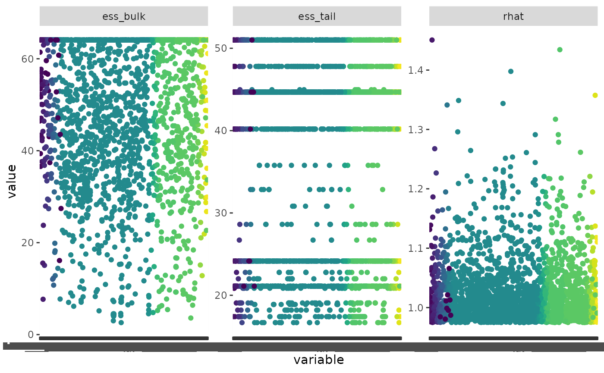

First make sure you have the BBS data downloaded
have_bbs_data()
#> BBS state data 2022: '~/.local/share/bbsBayes/bbs_state_data_2022.rds'
#> [1] TRUEIf not, install with fetch_bbs_data()
Let’s start by running a quick (and dirty) model looking at the Pacific Wren.
m <- stratify(by = "bbs_cws", sample_data = TRUE) %>%
prepare_data(min_year = 2009, max_year = 2018) %>%
run_model(model = "first_diff",
iter_sampling = 20, iter_warmup = 20, chains = 2)
#> Using 'bbs_cws' (standard) stratification
#> Using sample BBS data...
#> Using species Pacific Wren (sample data)
#> Stratifying data...
#> Combining BCR 7 and NS and PEI...
#> Renaming routes...
#> Running MCMC with 2 chains, at most 4 in parallel...
#>
#> Chain 1 WARNING: There aren't enough warmup iterations to fit the
#> Chain 1 three stages of adaptation as currently configured.
#> Chain 1 Reducing each adaptation stage to 15%/75%/10% of
#> Chain 1 the given number of warmup iterations:
#> Chain 1 init_buffer = 3
#> Chain 1 adapt_window = 15
#> Chain 1 term_buffer = 2
#> Chain 1 Iteration: 1 / 40 [ 2%] (Warmup)
#> Chain 1 Informational Message: The current Metropolis proposal is about to be rejected because of the following issue:
#> Chain 1 Exception: neg_binomial_2_log_lpmf: Precision parameter is 0, but must be positive finite! (in '/tmp/RtmpluobJx/model-402e720c4488.stan', line 227, column 3 to column 40)
#> Chain 1 If this warning occurs sporadically, such as for highly constrained variable types like covariance matrices, then the sampler is fine,
#> Chain 1 but if this warning occurs often then your model may be either severely ill-conditioned or misspecified.
#> Chain 1
#> Chain 1 Informational Message: The current Metropolis proposal is about to be rejected because of the following issue:
#> Chain 1 Exception: neg_binomial_2_log_lpmf: Precision parameter is 0, but must be positive finite! (in '/tmp/RtmpluobJx/model-402e720c4488.stan', line 227, column 3 to column 40)
#> Chain 1 If this warning occurs sporadically, such as for highly constrained variable types like covariance matrices, then the sampler is fine,
#> Chain 1 but if this warning occurs often then your model may be either severely ill-conditioned or misspecified.
#> Chain 1
#> Chain 1 Informational Message: The current Metropolis proposal is about to be rejected because of the following issue:
#> Chain 1 Exception: neg_binomial_2_log_lpmf: Log location parameter[1] is inf, but must be finite! (in '/tmp/RtmpluobJx/model-402e720c4488.stan', line 227, column 3 to column 40)
#> Chain 1 If this warning occurs sporadically, such as for highly constrained variable types like covariance matrices, then the sampler is fine,
#> Chain 1 but if this warning occurs often then your model may be either severely ill-conditioned or misspecified.
#> Chain 1
#> Chain 2 WARNING: There aren't enough warmup iterations to fit the
#> Chain 2 three stages of adaptation as currently configured.
#> Chain 2 Reducing each adaptation stage to 15%/75%/10% of
#> Chain 2 the given number of warmup iterations:
#> Chain 2 init_buffer = 3
#> Chain 2 adapt_window = 15
#> Chain 2 term_buffer = 2
#> Chain 2 Iteration: 1 / 40 [ 2%] (Warmup)
#> Chain 2 Informational Message: The current Metropolis proposal is about to be rejected because of the following issue:
#> Chain 2 Exception: neg_binomial_2_log_lpmf: Precision parameter is 0, but must be positive finite! (in '/tmp/RtmpluobJx/model-402e720c4488.stan', line 227, column 3 to column 40)
#> Chain 2 If this warning occurs sporadically, such as for highly constrained variable types like covariance matrices, then the sampler is fine,
#> Chain 2 but if this warning occurs often then your model may be either severely ill-conditioned or misspecified.
#> Chain 2
#> Chain 2 Informational Message: The current Metropolis proposal is about to be rejected because of the following issue:
#> Chain 2 Exception: neg_binomial_2_log_lpmf: Precision parameter is 0, but must be positive finite! (in '/tmp/RtmpluobJx/model-402e720c4488.stan', line 227, column 3 to column 40)
#> Chain 2 If this warning occurs sporadically, such as for highly constrained variable types like covariance matrices, then the sampler is fine,
#> Chain 2 but if this warning occurs often then your model may be either severely ill-conditioned or misspecified.
#> Chain 2
#> Chain 2 Informational Message: The current Metropolis proposal is about to be rejected because of the following issue:
#> Chain 2 Exception: neg_binomial_2_log_lpmf: Precision parameter is 0, but must be positive finite! (in '/tmp/RtmpluobJx/model-402e720c4488.stan', line 227, column 3 to column 40)
#> Chain 2 If this warning occurs sporadically, such as for highly constrained variable types like covariance matrices, then the sampler is fine,
#> Chain 2 but if this warning occurs often then your model may be either severely ill-conditioned or misspecified.
#> Chain 2
#> Chain 2 Iteration: 21 / 40 [ 52%] (Sampling)
#> Chain 1 Iteration: 21 / 40 [ 52%] (Sampling)
#> Chain 2 Iteration: 40 / 40 [100%] (Sampling)
#> Chain 2 finished in 23.4 seconds.
#> Chain 1 Iteration: 40 / 40 [100%] (Sampling)
#> Chain 1 finished in 24.5 seconds.
#>
#> Both chains finished successfully.
#> Mean chain execution time: 23.9 seconds.
#> Total execution time: 24.8 seconds.
#> Saving model output to /home/runner/work/bbsBayes/bbsBayes/vignettes/BBS_STAN_first_diff_hier_2022-11-07_01.rdsNow we can calculate our convergence metrics
conv <- convergence(m)
conv
#> # A tibble: 2,391 × 5
#> variable_type variable ess_bulk ess_tail rhat
#> <chr> <chr> <dbl> <dbl> <dbl>
#> 1 lp__ lp__ 37.4 21.1 1.07
#> 2 strata_raw strata_raw[1] 64.1 24.2 0.979
#> 3 strata_raw strata_raw[2] 25.1 47.8 1.06
#> 4 strata_raw strata_raw[3] 64.1 47.8 0.995
#> 5 strata_raw strata_raw[4] 64.1 35.8 1.04
#> 6 strata_raw strata_raw[5] 64.1 17.4 1.07
#> 7 strata_raw strata_raw[6] 64.1 44.7 0.993
#> 8 strata_raw strata_raw[7] 64.1 44.7 0.981
#> 9 strata_raw strata_raw[8] 64.1 24.2 1.07
#> 10 strata_raw strata_raw[9] 32.3 44.7 1.00
#> # … with 2,381 more rowsWow, there are a lot of variables here.
We can visualize this by transforming the data frame and using ggplot2
tconv <- tidyr::pivot_longer(conv, cols = c(ess_bulk, ess_tail, rhat))
ggplot(data = tconv, aes(x = variable, y = value, colour = variable_type)) +
geom_point() +
facet_wrap(~name, scales = "free_y") +
scale_colour_viridis_d(guide = FALSE)
#> Warning: Removed 99 rows containing missing values (`geom_point()`).
#> Warning: The `guide` argument in `scale_*()` cannot be `FALSE`. This was deprecated in
#> ggplot2 3.3.4.
#> ℹ Please use "none" instead.